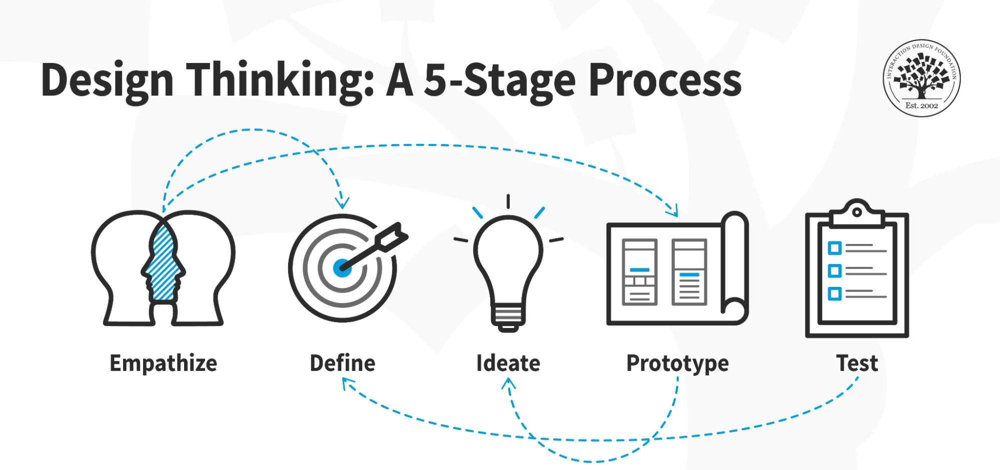

Design thinking is an iterative process that revolves around understanding users, challenging assumptions, redefining problems, and creating innovative solutions through prototyping and testing. The overall goal is to identify alternative strategies and solutions that may not be immediately apparent.
Design thinking is more than just a process; it offers a new way of thinking and a collection of hands-on methods to apply this mindset. It involves:
The iterative and non-linear design thinking process consists of five phases:
These stages can be carried out in parallel, repeated, and revisited as necessary. The core purpose is to work dynamically to develop and launch innovative ideas.
Design thinking encourages out-of-the-box thinking by:
Design thinking allows digging deeper into problem-solving through research, prototyping, and testing to uncover new ways to meet users' needs.
The scientific activities in design thinking analyze user interactions with products and investigate the conditions in which they operate. These activities include:
Once potential solutions are identified, the selection process is underpinned by rationality. Designers are encouraged to analyze and falsify these solutions to arrive at the best available option for each identified problem or obstacle during the design process phases.